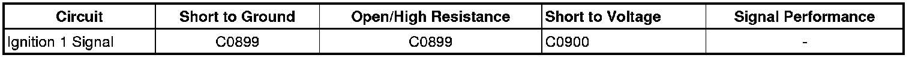

Antilock Brake System
DTC C0899
Diagnostic Instructions
* Perform the Diagnostic System Check - Vehicle (Initial Inspection and Diagnostic Overview) prior to using this diagnostic procedure.
* Review Strategy Based Diagnosis (Initial Inspection and Diagnostic Overview) for an overview of this diagnostic approach.
* Diagnostic Procedure Instructions (Initial Inspection and Diagnostic Overview) provides an overview of each diagnostic category.
DTC Descriptor
DTC C0899
- Device Voltage Low
Diagnostic Fault Information

Circuit/System Description
The electronic brake control module (EBCM) monitors the ignition voltage level available for system operation. A low voltage condition prevents the system from operating properly.
Conditions for Running the DTC
Ignition is ON.
Conditions for Setting the DTC
The ignition voltage available to the EBCM is less than 9 volts for 100 msec.
Action Taken When the DTC Sets
* The traction control system (TCS) and vehicle stability enhancement system (VSES) are disabled for the duration of the ignition cycle
* The Stability System Off and the Traction Control Off indicators turn ON.
Conditions for Clearing the DTC
* The condition for the DTC is no longer present.
* The EBCM automatically clears the history DTC when a current DTC is not detected in 100 consecutive drive cycles.
Reference Information
Schematic Reference
Antilock Brake System Schematics ([1][2]Antilock Brakes / Traction Control Systems)
Connector End View Reference
Component Connector End Views (Connector Views)
Description and Operation
* ABS Description and Operation (Description and Operation)
* Charging System Description and Operation (Description and Operation)
Electrical Information Reference
* Circuit Testing (Component Tests and General Diagnostics)
* Connector Repairs (Component Tests and General Diagnostics)
* Testing for Intermittent Conditions and Poor Connections (Component Tests and General Diagnostics)
* Wiring Repairs (Component Tests and General Diagnostics)
Scan Tool Reference
Control Module References (Programming and Relearning)
Diagnostic Aids
A low voltage DTC in multiple modules indicates a concern in the charging system.
Circuit/System Testing
1. Measure and record the voltage at the battery terminals. Observe the scan tool Battery Voltage Signal parameter. Verify that battery terminal voltage and battery voltage signal readings do not differ more than 1 volt.
• If the difference is more than 1 volt, test the battery positive voltage and ground circuits of the EBCM for an open/high resistance, or replace the EBCM.
2. Go to Charging System Test (Charging System Test) .
Repair Instructions
Perform the Diagnostic Repair Verification (Verification Tests) after completing the diagnostic procedure.
Control Module References (Programming and Relearning)for EBCM replacement, setup and programming